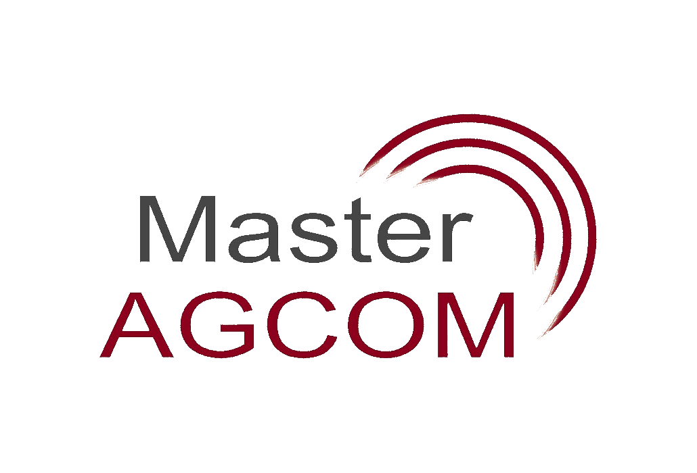
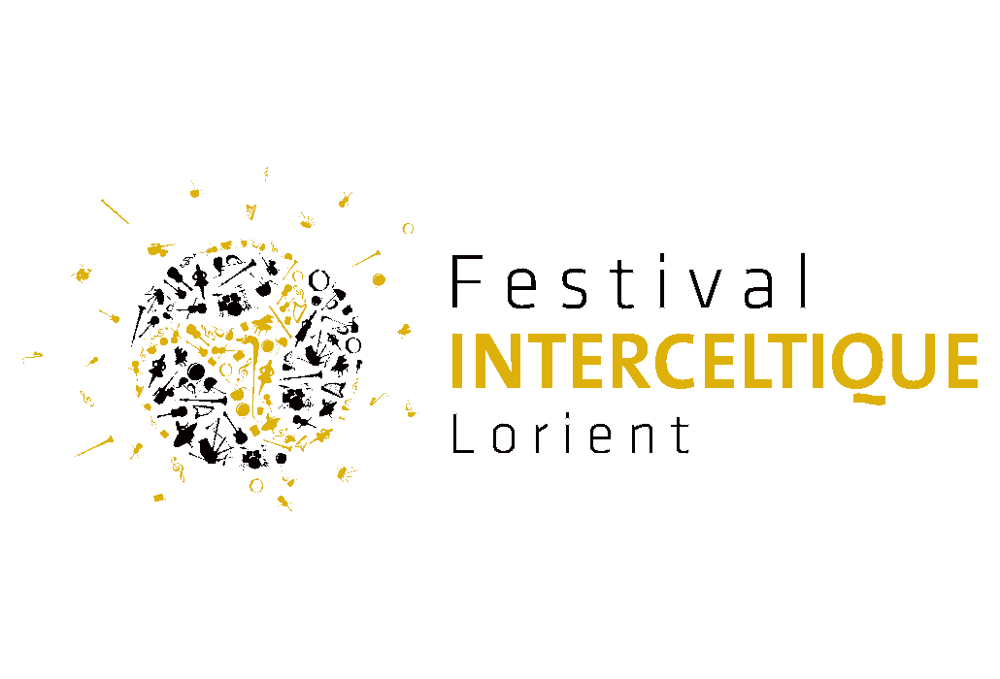
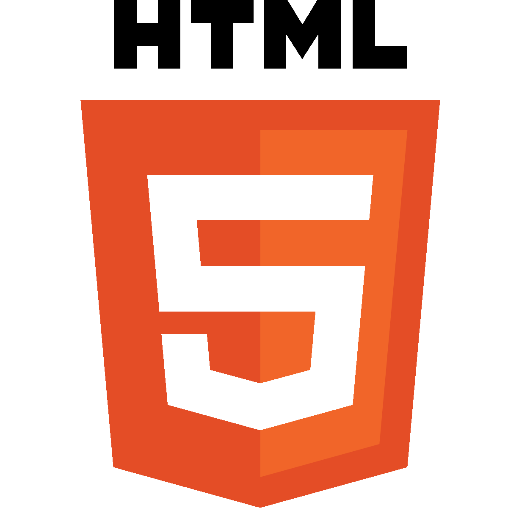
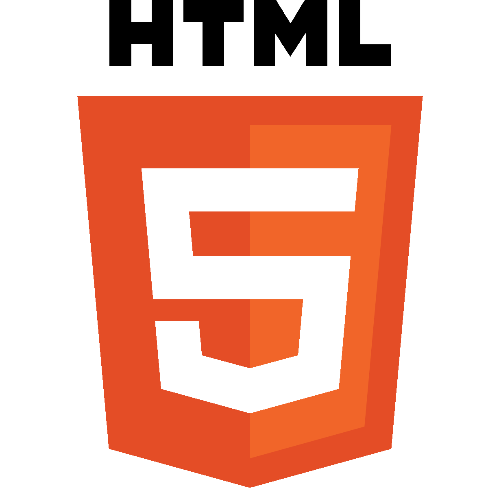

QUI SUIS-JE ?
Diplomé d'un master en stratégie de communication effectué à l'université Toulouse 1 Capitole, j'ai travaillé au sein d'organisation comme le Festival Interceltique de Lorient ou Atlangames:Cluster du jeu vidéo de l'Ouest.
A la fin de mes études, j'ai souhaité m'orienter vers le développement web afin d'être toujours au plus près des demandes de mes clients. Après une formation intensive de deux mois au sein du Wagon, je réalise désormais pour vous tous types de sites (e-commerce, site vitrine, application web) et vous accompagne dans l'acquisition du trafic, le référencement et la planification de votre communication.
CONTACTS
- Nom : Lespagnol Joris
- Téléphone : 06.19.25.95.30
- Mail : working@mail.com
- Localisation : Nantes / Paris

Lors de ma dernière année d'études, j'ai pris part activement à la communication du Master 2 AGCOM. A travers divers supports nous avons activement fait la promotion de notre filière.
Durant 6 mois nous avons mis en place un magazine bi-mensuel portant sur des sujets d'actualités en lien avec la communication que nous diffusions en ligne sous le nom de MagCom disponible sur le site du Master.
Nous avons également réalisé une vidéo promotionnelle de notre filière à destination des futurs candidats ainsi que plusieurs vidéos d'interviews d'étudiants de l'université en partenariat avec Dior Love Chain.

Arrivé peu de temps avant le début du festival, j'ai contribué à la gestion des stocks et des plannings pour le six boutiques officielles dispersées sur le site.
Pendant les dix jours d'exploitations, j'ai veillé au bon fonctionnement de chaque boutique en m'assurant de leur mise en place, des roulements des bénévoles ainsi que de la fermeture des dîtes boutiques. Cette expérience m'a permis d'acquérir une capacité à prendre des décisions efficaces dans des situations stressantes.
Après une licence Information-Communication à Rennes, ainsi qu'un master 1 Relations publiques à Montepellier, j'ai souhaité finir mes études au sein du master II Agcom situé à Toulouse 1 Capitole.
J'ai tout au long de mes études aiguisées mes connaissances en communication aussi bien interne qu'externe. Ma dernière année d'études m'a permis de confirmer mes acquis et d'apprendre de nouvelles compétences notamment en stratégie de communication à travers un approche professionnalisante.
A la suite de mes études, j'ai souhaité apporté une nouvelle compétence à mon diplome afin de pouvoir m'adapter aux nouvelles technologies.
J'ai donc choisi de rejoindre le Wagon en février 2019 pour une formation intensive de 400h sur deux mois. Je dispose donc maintenant des compétences de développeur Web Ruby on rails. Je réalise tout type de sites (vitrine, e-commerce, application web).

 
